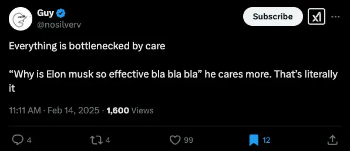
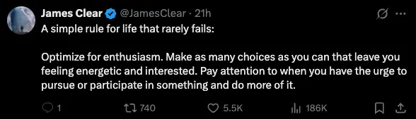

- 2025-07-15
- See also
- I want to try to steelman various things here
- But I also want to write from what currently feels true
- Feels like a tricky balance!
- I think I’ll try steelmanning and red-teaming in later notes. This one is an initial kind of “manifesto”/story
1. Empirical knowledge re: my interest in Effective Altruism
- What I know for ~certain, from my life, experientially, empirically, reporting on my own feelings
- (“Your feelings can’t lie”, from consensus-ism)
1a. I lack true care for EA
- What I’m missing, and have always been missing, is true mission buy-in, true care
- I came to EA from a place of “I don’t know what to do, this seems good”
- Effective Altruism has always been accompanied by the grindy feeling of “this isn’t quite right”
- This is empirically, experientially true:
- I’ve never done a true deep dive on an effective altruist cause area from a genuine place of passion/care
- I’ve never had a single cause area where I’ve had real buy-in, where learning about it has felt self-sustaining and intrinsically motivated
- I’ve never read an EA book from a place of intrinsic motivation. I’ve never wanted to read Will McAskill or Toby Ord’s stuff, for example
- I’ve never learned about a cause area from a place of intrinsic motivation, from a place of “this is the #1 thing that I should learn about right now, no grindiness”
1b. I know what it feels like to care
”The number 1 thing”
- I’ve always known (even if not in a foregrounded way) that the most salient/relevant/maddening “open loop” thing in my life, that I think about daily, is the poor health of my family system.
- The suffering of my family unit, the lack of healthy functioning.
- This is the most salient thing!
Whole-hearted deep dives
- I also know what it feels like to have total consensus re: the importance of something, to happily deep dive on something that feels really interesting/important/alive
- Full-hearted deep dives that I’ve done:
- Music/youtube, post-rationalism, Socrates, learning how to learn, learning to code. David Foster Wallace.
- All of these feel “transparent”, obvious, intrinsically motivated.
- There’s a feeling of self-sustainment, of easily following the same thread for months in a row, of obviousness
- Music/youtube, post-rationalism, Socrates, learning how to learn, learning to code. David Foster Wallace.
2. Why have I tried so hard to nerd-snipe myself into being an EA?
- Even the thesis of this post is essentially me wrestling with guilt for not being a “good EA”, and wrestling with the fact that I’ve never been one. Why does it have such a hold over me??
2a. “Moral responsibility (I guess)”
- “There are existential risks!”
- And this is true! AI could seriously pose a threat to humanity. Bioweapons. Nuclear risk.
- Seems “correct”, utilitarianism
- “I care more about my family of <20 people, than the 1000s that I could help with my EA job” → that’s kinda fucked up, right?
- (But then again, this is a place of ignorance → utilitarianism is the only school of ethics/moral philosophy (?) that I could name. I had never thought about ethics, then a friend shared EA with me, then I got nerd-sniped by it, and never investigated alternative positions)
- “I care more about my family of <20 people, than the 1000s that I could help with my EA job” → that’s kinda fucked up, right?
- There’s a Roko’s Basilisk-type thing of like “now I know about EA, to take a non-EA job would be extra bad” - it’s kind of like an info hazard. Now moral concern has at least partially turned on, it’s hard to turn it off
2b. Totalising, stressful, “running out of time”
- “AI might kill us in 2-3 years, there’s no time to ‘Know Thyself’!!!”
- “People are suffering now, you can’t ‘work on yourself’, don’t you realise how privileged you are!!!“
2c. Other paths felt intractable/were memory-holed
- “I don’t have a path, I don’t have preferences, I don’t know what I want to do” etc
- Lack of agency, used to just going along with whatever, used to subjugating my genuine desires, etc etc
- “What I would like” (to not be driven mad by my family) felt intractable, impossible, overwhelming, etc, and as such, was never foregrounded for any length of time. “Oh god, I think about how infuriating my family is every day, but it’s impossible, ahhh, repress repress, just focus on other things!“
3. Why have I failed to make myself care about EA?
- I’ve read “The Precipice” by Toby Ord, I’ve read “Doing Good Better”, I’ve read some of the 80k career profiles, I’ve listened to some 80k podcast episodes, I’ve worked at an EA org, I’ve been to EAG. I did an “Intro to EA” weekly cohort thing where they taught us about scope neglect etc. I’m aware of the concepts, but it hasn’t shifted into experiential knowledge
- I think the answer is just ultimately “because there’s always been something that has felt more salient, local, pressing, that I’ve been neglecting through fear and a feeling of intractability/overwhelm”
I’m not a utilitarian
- I’m not a utilitarian, I never arrived at that as a truth, but it nerd-sniped me
- Asking Gemini about alternatives to utilitarianism:
- Care Ethics → Core Idea: This ethical framework, largely developed by feminist philosophers like Carol Gilligan and Nel Noddings, emphasizes the importance of relationships, dependency, and the moral salience of attending to the needs of “particular others.”
- Virtue Ethics → Core Idea: Drawing inspiration from ancient Greek philosophers like Aristotle, virtue ethics focuses on the character of the moral agent rather than specific rules or consequences. It asks what a virtuous person would do.
Note from Simmo:
- Simmo read this and said:
- “I guess the other thing is surprise that you see EA as utilitarian”
- “I think fewer than 50% of self.identified EAs see themselves as utilitarian”
- “Maybe consequentialist is closer?”
- So, my updated point is this - I am not a utilitarian, a virtue ethicist, a deontologist, a consequentialist - I’m just some dude
4. What would it take to intrinsically care about EA?
4a. Putting out my own fires?
- As discussed above, there’s a strong sense of the suffering of family members as being more salient than the suffering of non-family members
- Perhaps this is morally reprehensible. It is, according to utilitarianism
- Ultimately, it’s a knowledge problem?
- Socrates thing of virtue/wisdom being knowledge. No one would choose to do bad. Currently, it feels to me that my family matters, and the abstract masses who are suffering just aren’t in my salience landscape in the same way. And yes, “scope neglect”, “treating people who are closer to you as more morally important” etc. But, that’s my lived experience, currently
- Acting against my lived experience, what feels “true”, feels grindy and bad
4b. Finding my way to it through first principles?
- E.g., the John Stuart Mill thing of becoming a utilitarian (then burning the fuck out, and then returning to a healthier form of it)
- Discovering a true passion for ethics, virtue, doing good
- The OGs, Toby Ord, Will McAskill etc → this is exactly what they did! They’re philosophers, presumably moral philosophers
- Then they founded CEA and 80,000 Hours to convince people to join the cause
- (But if you get nerd-sniped into believing it to the detriment of your own edge/path/local concerns, that may not go so well in the long run)
- It seems important to arrive at utilitarianism yourself (or, whatever form of ethics seems most “true” to you), discover it as a Popperian truth after learning to think and clarifying your own goals and priorities, rather than having it handed to you by the EA marketing team, CEA and 80,000 Hours etc
- Either you’re doing things because you have arrived at truths yourself, or you’re taking on the truths of others and ignoring your own “edge”
Aha → am I basically reckoning with Kegan stages here?
- As a Kegan 3, an intellectual adolescent, I didn’t know how to think for myself, having never been taught
- I discovered a movement that said that utilitarianism is the correct way and I thought “ok, sounds good!”
- And now, as I wrestle with my own values and the painful transition from Kegan 3 to 4, I’m facing the pain of realising that I have been animated by stories that were not my own
Also, this comes back to Anticipatio Mentis
- Read about EA as a ~19 year old → immediately grasp on this it
- Vs Interpretatio Naturae
5. What about being an unreflective EA?
- “But what if everyone only reached EA after a circuitous road of learning how to think?”
- Then there’d be far less people working on important causes, right?
5a. EAs can be motivated by things other than just ethics
- I have a suspicion that a lot of people working on e.g. AI safety also just find it really interesting.
- Like, they’re computer scientists, working at the cutting edge, on something that plausibly seems to be very important.
- They don’t need a deep Popperian sense of “I have landed on ethics/utilitarianism as a truth”, because they are intrinsically motivated by working on hard problems, getting paid well, being in a community of people who also have deep knowledge of their area, etc
- There’s the Vervaeke idea of participatory knowledge, of having great agent-arena fit, being in the flow state, being the opposite of alienated. Being deeply enmeshed in something enjoyable, getting great feedback (accolades, feedback, payment)
E.g., me at Alvea
- I wasn’t aligned with/interested in the biosecurity space before working at Alvea, or during, or after
- Before working at Alvea, didn’t think about biosecurity at all
- At Alvea, was just focused on Alvea
- After Alvea, never thought about biosecurity again
- No desire to read about biosecurity - I have books about it, never opened
- However, I found the job deeply meaningful
- Satisfying work, amazing people, great culture, great pay, positive mission
5b. Therefore, why not get an Alvea-type job again?
5b1. But, it’s not my primary mission
- I’ve now foregrounded my “mission” of “healing my family” (or at least, “healing myself in relation to my family”)
- It feels important to do this in-person, so now is the perfect time
- It feels important to treat this as a proper project (rather than something I slot in around a full-time job)
- I don't want to carry someone else's torch. I want to carry my torch.
5b2. “Lack of care” as bottleneck
- It’s hard to get an EA job, and lack of care is a bottleneck
- Nearly got the “founding generalist” role at Kairos (AI safety org), but was lacking deep knowledge of the AI safety space
- And learning this didn’t make me endeavour to learn more about the AI safety space → I don’t care about the AI safety space!
- 🚨 Because I don’t care about any cause area:
- I can’t apply to any EA job from a place of “I know a lot about this and can apply that knowledge”
- I can only apply from a place of "I don't know anything about this cause area (because I don't intrinsically care), but I can learn about it on the job, because having a job in this cause area will make me care more"
I got Alvea because of care
- I cared deeply about learning how to learn, and this passion, and the projects that came out of it, got me the job at Alvea
5. The power of care
- This is inspired by a tweet I saw, so it’s not like, a deeply validated/considered view
- However, it deeply resonated, and feels true based on my lived experience

- Another one:

- I have a sense that the ideal path is “follow care”, and this could look like
- landing on a cause area (and maybe not even an EA one) that I’m truly passionate about, then upskill, then apply from a place of genuine passion (or build my own thing, or whatever)
- Like e.g. truly landing on “oh, I absolutely want to be a coach”, or whatever
- It feels like, to follow care is to live “in” the questions, the uncertainty, of where you’re personally at right now, rather than taking someone else’s philosophy (e.g. McAskill/Ord utilitarianism) and saying “I’ll live according to what these guys say”
What does “Follow the care” currently look like?
- My family
- I care a lot about learning to be more skillful here, and making things better
- My own learning and values
- I’ve learned how to learn, now I’m learning to think
- I care a lot about improving my ability to think, making less mistakes in my thinking, pivoting less, finding more Popperian truths
- Popperian truth
- Bringing some money in → I’ve been “in the red” for while now and it’s time to replenish my savings
- Being a better person → meditation, Popperian truths, virtue, kindness, etc. Reckoning with the ways in which I’m immature (e.g. the book “Growing Yourself Up”)
6. Currently envisioned path
Phase 1
- “Take part-time job” → money coming in
- Continuing learning from Socrates & Plato re: how to think, how to discover relatively certain values (Popperian, for Karl Popper)
- Continue working on my family & my relationship to them
- Start learning “to stop shitting in the pool” (from my friend Michael, and his metaphor of “the three turnings” of Buddhism/enlightenment)
- Era 1 → the OG Buddha, teaching you to be free from your own suffering, to stop polluting the water
- Era 2 → the importance of teaching other people to stop polluting the water
- Era 3 (Mahamudra etc?) → the importance of cleaning the water
Phase 2
- Now I can think for myself → find my own intrinsic values, Popperian truths
- This unlocks care and a path for phase 3
Phase 3
- “Now I can build a life built on Popperian truths, with care, dedicated, a lack of pivoting, a feeling of security, a stable foundation from which to build”
- It could be that I become a utilitarian, or something else entirely
- And my family is no longer a profound drain
- To me, this feels like a path to being an adult, having true values.
7. On being present IRL
Learn to “stop shitting in the pool”
- Re: era 1 of Buddhism → stop polluting the water, and also era 3 → start cleaning up the water
- It feels like living with my mum is the ideal place to:
- Help the family (I see them every day, I’m a Trojan Horse)
- Heal my own reactivity
- In relation with my mum, dad, sister, that’s where I’m most triggered and reactive
- To “heal” things with them feels like it’d make me show up much better elsewhere
- Like, I could go to an intentional community and “heal”, but that’s with strangers who trigger me less, right? Far less history, attachment
- Clean the water (Buddhism era 3)
- Much, much easier to do this IRL than if I were to move away
8. Quick red-teaming of current stories
Story: “I can put out my fires”
- I went from “I just want to flee my family and give up, like other members have” to “there really may be a path here” → that's a big pivot!
What is success?
- In everything I’ve read so far, it is stressed that you can’t change other people
- But, it is stressed that you can change yourself, and in doing so, you will change the family system
- Less anxiety in the system
- Less reactivity
- More adults in the room
- So, maybe I can’t cause profound changes in others, but it seems very likely that I can change myself
- Empirical → I’ve changed a lot, I’m well resourced, I have wise friends, post-rat knowledge, there’s a huge ecology of practices, etc. Metta, things like “The Work”, art of accomplishment, Sasha Chapin’s strong recommendation to me re: open awareness practice. Michael Stroe coaching re: breaking the fetters. Johnson who has successfully transformed his relationship with him mum, etc
- p(I can positively change myself) is high! Empirically backed!
- There is definitely a path to having a healthier family.
- Both low-hanging fruit, and things that will require more skill, courage, perseverance
If I put out my fires
- My extended emotional system (that is, my family) is now operating better
- I can now expand my moral area of concern
Steelmanning the path of “not following care”
- Could “follow what you care about” be a Popperian truth?
- I should try to refute it